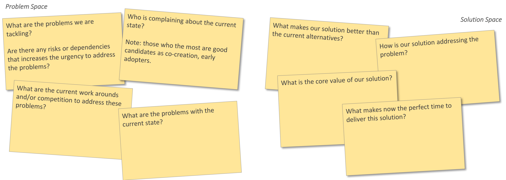
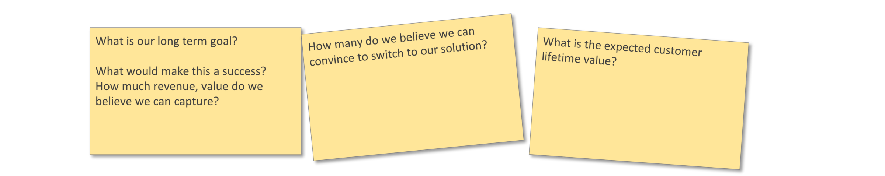
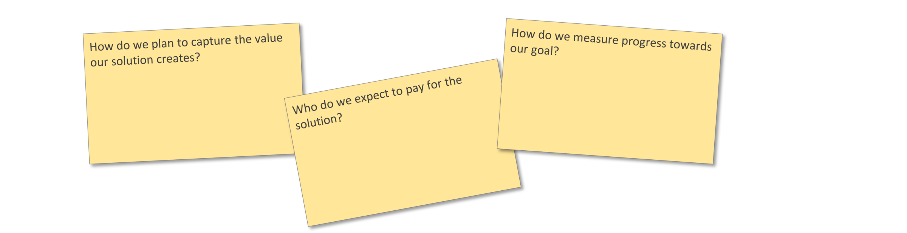
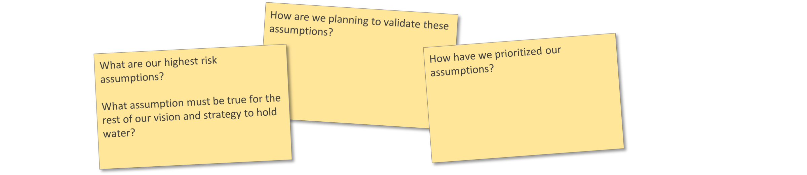

August 2018 > Originally posted on Medium
What is your Business Blueprint?
Thanks to the popularity of Lean Startup, the traditional big “Business Case” documents are usually no longer required … but a “business plan” is still paramount.
Why do you need it?
The obvious use of the business plan is to shape it into a pitch-deck to get funded. However, the most import purpose to have a business plan is actually for you and your team to agree on the overall vision and strategy, as well as identify, prioritise and plan the (next) key focus areas.
What’s in it?
So what do you — as entrepreneur or intrapreneur — need to put together your business plan?
Today there is often an expectation for you to create a Business Model Canvas/Value Proposition Canvas combo (or variations thereof e.g. Lean Canvas). But many look at it as a chore, they find it confusing where to start, what exactly should go in each box and more importantly, how to use it/what to do with it. In a previous post, I shared a concept of another variation for a canvas, i.e. the Product Journey, but I must admit that it also still misses the mark, especially on how to use it.
Looking through a number of canvas variations, cross-referencing with examples of pitch-deck templates it became clear that as an entrepreneur you need to keep your eye on 6 key areas. Hereby presenting you with the Business Blueprint:
1. Purpose — What is it about?
The first thing you need to articulate and be crystal clear about is your purpose, the “what is it about”. There are two main parts to describe here; the problem space (current) and the solution space (future).
Problem Space: Innovation often starts with an idea to solve a pain-point. Before jumping ahead in solution-mode it is important to really understand and describe the underlying problem and take stock of the current work-arounds/competition. Knowing the characteristics of those who are complaining (the loudest) about the current workarounds is extremely valuable, because they are often great candidates to be your early adopters.
Solution Space: Describe whatever the actual value is that your solution creates e.g. save money/time, reduce complexity, increase comfort, etc. Also highlight how your solution is solving the problem and what it is that makes your solution better than the competition, current alternatives and work arounds. Create a sense of urgency by explaining your “why now” by sharing which technology, economic, regulatory, behaviour, demographic … change, makes now the perfect time for your solution.
For a platform (or indirect) business model there must be a well thought out problem and well defined solution for both parties that will encourage them to switch from their current alternatives. e.g. the AirBnB platform must provide value to address problems for hosts (I have a room/home available) as well as guests (I need a place to stay).

Example questions for "Purpose"
From the “purpose” area above, you can extract content for your “problem”, “competition”, “solution” and “why now” slides typically used in a pitch-deck.
2. Goal & Revenue Model — Where are you going?
Once the purpose has been defined you need to describe a convincing vision with an ambitious goal. Here you need to share what exactly you will be aiming for and what goal will make this a success. In your vision you will describe how much value (typically revenue) you aim at capturing as well as project how many you believe can be convinced to switch to your solution.Example questions for “Vision”

Example question for "Goal & Revenue Model"
The vision will provide info for your “market size” and target “financials” slides in a pitch-deck.
3. Go-to-Market Strategy — How are you getting there?
Your worthwhile purpose with an exciting vision, also needs a credible strategy outlining how you plan to get there. Working back from the goal you can describe how you plan to progress and grow towards your target.
For a new value proposition — in the early stages — the focus will be on validating your purpose assumptions to confirm whether you are really addressing a problem worth solving and whether your solution is a good fit.
Once you have found a problem-solution fit your focus can shift towards validating the whether there is a market for your solution. Transparently define the metrics you will use to measure traction.
e.g. the pirate (AARRR) metrics Acquisition, Activation, Revenue, Retention and Referral can be used here. Based on your target growth rate towards your goal, how many new customers need to be acquired at each stage, from how many will we be able to capture the value they used, how many will use the value again and how many times/how many will churn, how many will become ambassadors etc.

Example question for "Go-to-market Strategy"
The strategy will offer insights for the “revenue model” and long term “road map” slides in your pitch-deck.
4. Status — Where are you now?
Be very transparent when it comes to sharing where you are today towards your goal. Share the key learnings to-date, the assumptions that have already been validated (and how) and any other proof of traction.
Example question for "Status"
Show “traction” as evidence to convince your audience you are on the right track in your pitch-deck.
5. Plan — What are your next steps?
By this stage you have hopefully managed to excite everyone to believe in your purpose, vision and strategy as well as shared the current status.
The “plan” part of your business plan is vital as it justifies any funding you are asking for.
Here you will openly share what your next objectives are, which activities your team has planned for this, and why those activities were prioritised. Prioritise what you will validate next based on what your current highest risk assumptions that have the potential to render your overall business plan irrelevant (e.g. will someone rent out their own home to strangers?). Always be very transparent on what the expected outcome of your experiments will be and how you will measure them (following the 3-A of metrics: accessible, auditable and actionable).

Example question for "Plan"
Pitch deck: be very clear on your what you are doing next and why by providing a detailed “timeline”.
6. Support — What do you need?
You have provided enough information to now ask for the support you need to execute the planned activities. Be clear what the resources are — whether it is money, people, time, etc. — you asking for.
Example question for "Support"
Always end with a call to action and be clear what you are asking for whenever you pitch or provide an update.
Other than the 6 key areas above, you obviously also need a catchy name and a high level pitch where you describe what you are about in one simple sentence.
Bigger Picture
All this information is fundamentally very similar, irrespective whether you are pitching to get funding for your start-up. It can also serve when you are updating an internal innovation board on the results of your past quarter’s activities to get buy-in on your approach, next steps and ask for further support (think the metered-funding Eric Ries talks about in The Startup Way).
Nothing on the Business Plan Blueprint is a one-off exercise. Anything can change based on the learnings and outcomes of previous activities. You may learn something that significantly changes your solution or it can make you adapt your strategy. It can also provide you with facts that change (probably to make them more realistic) your long term goal … or even forces you to be honest and suggest to kill the whole idea.
The Business Plan Blueprint can be your team’s working dashboard, to openly share where you are, what you are working on and where you are going. Whatever your velocity of updates is, tag each version (e.g. whatever makes naming sense to you) of your business plan so that it becomes your journey from conceptual idea to (hopefully) a successful new product!